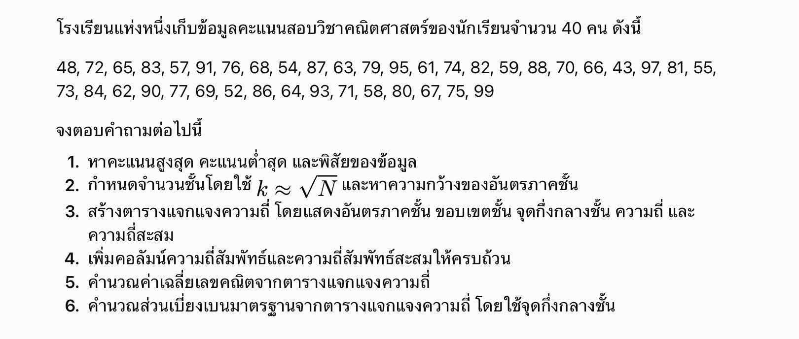

เนื้อหาที่จะได้เรียนรู้
เว็บไซต์นี้เรียบเรียงเนื้อหาจากไฟล์ต้นฉบับเป็น 5 หัวข้อ พร้อมแบบฝึกหัดให้ลองทำ โดยกดเลือกข้อเพื่อเปิดโจทย์และกรอกคำตอบ
01 · ข้อมูล
ทำความเข้าใจข้อมูลเชิงปริมาณและข้อมูลเชิงคุณภาพ
02 · ความถี่
จัดข้อมูลเป็นชั้นและสรุปจำนวนความถี่
03 · ค่ากลาง
ค่าเฉลี่ย มัธยฐาน และฐานนิยม
04 · ตำแหน่ง
ควอร์ไทล์ เดไซล์ และเปอร์เซ็นไทล์
05 · การกระจาย
พิสัย ส่วนเบี่ยงเบนควอร์ไทล์ ส่วนเบี่ยงเบนเฉลี่ย และส่วนเบี่ยงเบนมาตรฐาน
ภาพรวมของข้อมูลและการวิเคราะห์
สถิติเป็นศาสตร์ที่เกี่ยวข้องกับการเก็บรวบรวม การนำเสนอ และการวิเคราะห์ข้อมูล เพื่อนำไปสร้างสารสนเทศที่เป็นประโยชน์ต่อการตัดสินใจ
ข้อมูลเชิงปริมาณ
ข้อมูลที่แสดงเป็นตัวเลขและสามารถวัดได้ เช่น ส่วนสูงหรือคะแนนสอบ แบ่งเป็นข้อมูลแบบ ต่อเนื่อง และ ไม่ต่อเนื่อง
ข้อมูลเชิงคุณภาพ
ข้อมูลที่แสดงลักษณะหรือคุณสมบัติซึ่งไม่ใช่ตัวเลข เช่น เพศหรือระดับความพึงพอใจ โดยอาจกำหนดเป็นตัวเลขเพื่อใช้ในการวิเคราะห์ได้
การวิเคราะห์ข้อมูลเชิงปริมาณ
ใช้วิธีการทางสถิติในการวิเคราะห์ข้อมูลตัวเลข ประกอบด้วยสถิติเชิงพรรณนาและสถิติเชิงอนุมาน
การวิเคราะห์ข้อมูลเชิงคุณภาพ
มุ่งศึกษากระบวนการทางสังคม มิติทางวัฒนธรรม และความสัมพันธ์ระหว่างปรากฏการณ์กับสภาพแวดล้อม
การแจกแจงความถี่
การแจกแจงความถี่เป็นวิธีจัดข้อมูลให้อยู่ในหมวดหมู่ เพื่อแสดงว่าค่าแต่ละค่าหรือกลุ่มข้อมูลเกิดขึ้นบ่อยเพียงใด
การนำเสนอข้อมูล
สามารถนำเสนอข้อมูลด้วยข้อความหรือตาราง เช่น ตารางทางเดียว ตารางสองทาง และตารางหลายทาง
อันตรภาคชั้น
แบ่งข้อมูลออกเป็นช่วงชั้น โดยในเอกสารระบุว่าโดยทั่วไปอาจแบ่งประมาณ 5–20 ชั้น
ขอบเขตชั้น
สำหรับคะแนนจำนวนเต็ม ขอบเขตชั้นมักอยู่กึ่งกลางระหว่างขีดจำกัดของชั้นที่ติดกัน เช่น อันตรภาคชั้น 41–50 มีขอบเขตชั้น 40.5 และ 50.5
ความกว้างของชั้น
ผลต่างระหว่างขอบเขตชั้นบนกับขอบเขตชั้นล่าง
ความถี่สะสม
ผลรวมสะสมของความถี่ตั้งแต่ชั้นแรกจนถึงชั้นที่กำลังพิจารณา
ความถี่สัมพัทธ์
ความถี่ของชั้นนั้นหารด้วยความถี่ทั้งหมด สามารถแสดงเป็นเศษส่วน ทศนิยม หรือร้อยละได้
ตัวอย่างตารางแจกแจงความถี่
ตารางต่อไปนี้นำตัวอย่างคะแนนคณิตศาสตร์จากบทเรียนมาแสดงวิธีจัดข้อมูลความถี่
| อันตรภาคชั้นคะแนน | ขอบเขตชั้นล่าง | ขอบเขตชั้นบน | ความถี่ (f) | ความถี่สะสม | จุดกึ่งกลางชั้น (xᵢ) |
|---|---|---|---|---|---|
| 41–50 | 40.5 | 50.5 | 1 | 1 | 45.5 |
| 51–60 | 50.5 | 60.5 | 3 | 4 | 55.5 |
| 61–70 | 60.5 | 70.5 | 6 | 10 | 65.5 |
| 71–80 | 70.5 | 80.5 | 9 | 19 | 75.5 |
| 81–90 | 80.5 | 90.5 | 7 | 26 | 85.5 |
| 91–100 | 90.5 | 100.5 | 4 | 30 | 95.5 |
การวัดค่ากลางของข้อมูล
การวัดค่ากลางใช้ค่าหนึ่งเพื่อเป็นตัวแทนหรืออธิบายลักษณะโดยรวมของชุดข้อมูล
ค่าเฉลี่ยเลขคณิต
ค่าเฉลี่ยใช้ข้อมูลทุกค่าในการคำนวณ และเหมาะกับชุดข้อมูลที่ไม่มีค่าผิดปกติซึ่งส่งผลต่อค่าเฉลี่ยมากเกินไป
xᵢ = midpoint of class i · fᵢ = frequency of class i · N = total number of data points.
มัธยฐาน
มัธยฐานคือค่าที่อยู่ตรงกลางเมื่อเรียงข้อมูลจากน้อยไปมาก เหมาะกับข้อมูลที่มีค่าสูงหรือต่ำผิดปกติ เพราะได้รับผลกระทบจากค่าผิดปกติน้อยกว่าค่าเฉลี่ย
L = lower boundary of the median class · I = class width · CF = cumulative frequency before that class · fₘₑd = frequency of the median class.
ฐานนิยม
ฐานนิยมคือค่าที่พบซ้ำหรือเกิดขึ้นบ่อยที่สุด และสามารถใช้กับข้อมูลเชิงคุณภาพได้ สำหรับข้อมูลแบบจัดกลุ่ม ให้พิจารณาชั้นฐานนิยม ซึ่งเป็นชั้นที่มีความถี่สูงที่สุด
dL = modal-class frequency minus the frequency of the adjacent lower class. dU = modal-class frequency minus the frequency of the adjacent higher class.
ตัวอย่างคำนวณจากบทเรียน
จากคะแนนสอบวิชาประมวลผลคำของนักเรียน 40 คน ตารางแจกแจงความถี่ได้ค่า Σfx = 954 และ N = 40
23.85
≈ 24.64
ตำแหน่งที่ 20 อยู่ในอันตรภาคชั้น 20–25
≈ 28.125
ชั้นฐานนิยมคือ 26–31 ซึ่งมีความถี่เท่ากับ 14
การวัดตำแหน่งของข้อมูล
การวัดตำแหน่งใช้บอกว่าค่าหนึ่งอยู่ในตำแหน่งใดเมื่อเรียงข้อมูลตามลำดับ
ควอร์ไทล์
แบ่งข้อมูลที่เรียงลำดับแล้วออกเป็น 4 ส่วน
- Q₁: มีข้อมูลประมาณ 25% อยู่ต่ำกว่าค่านี้
- Q₂: มีข้อมูลประมาณ 50% อยู่ต่ำกว่าค่านี้ ซึ่งเท่ากับมัธยฐาน
- Q₃: มีข้อมูลประมาณ 75% อยู่ต่ำกว่าค่านี้
เดไซล์
แบ่งข้อมูลที่เรียงลำดับแล้วออกเป็น 10 ส่วน มีเดไซล์ 9 ค่า ได้แก่ D₁ ถึง D₉
เปอร์เซ็นไทล์
แบ่งข้อมูลที่เรียงลำดับแล้วออกเป็น 100 ส่วน มีเปอร์เซ็นไทล์ 99 ค่า ได้แก่ P₁ ถึง P₉₉
สูตรสำหรับข้อมูลแบบจัดกลุ่ม
L = ขอบเขตชั้นล่างของชั้นที่มีตำแหน่งเป้าหมาย · I = ความกว้างของชั้น · CF = ความถี่สะสมก่อนถึงชั้นเป้าหมาย · N = ความถี่ทั้งหมด · f = ความถี่ของชั้นเป้าหมาย · r = ลำดับควอร์ไทล์ เดไซล์ หรือเปอร์เซ็นไทล์ที่ต้องการ
การวัดการกระจายของข้อมูล
การกระจายใช้บอกว่าค่าข้อมูลกระจายห่างกันหรือเกาะกลุ่มกันมากน้อยเพียงใด
พิสัย
เป็นค่าที่ใช้วัดการกระจายอย่างง่าย และไวต่อค่าผิดปกติ
ส่วนเบี่ยงเบนควอร์ไทล์ (QD)
เหมาะสำหรับการแจกแจงความถี่แบบปลายเปิดและชุดข้อมูลที่มีค่าผิดปกติ
ส่วนเบี่ยงเบนเฉลี่ย (MD)
ใช้ค่าความเบี่ยงเบนของข้อมูลแต่ละชั้นจากค่าเฉลี่ยเลขคณิต
xᵢ = จุดกึ่งกลางชั้น · fᵢ = ความถี่ของชั้น · x̄ = ค่าเฉลี่ยเลขคณิต · N = จำนวนข้อมูลทั้งหมด
ส่วนเบี่ยงเบนมาตรฐาน (SD)
เป็นค่าที่นิยมใช้เพื่ออธิบายการกระจายของข้อมูลรอบค่าเฉลี่ย
xᵢ = จุดกึ่งกลางชั้น · fᵢ = ความถี่ของชั้น · x̄ = ค่าเฉลี่ยเลขคณิต · N = จำนวนข้อมูลทั้งหมด
ตัวอย่างการสร้างตารางแจกแจงความถี่
บทเรียนแสดงขั้นตอนต่อไปนี้โดยใช้คะแนนสอบคณิตศาสตร์จำนวน 30 ค่า
- กำหนดจำนวนชั้น.
ใช้จำนวนข้อมูลเป็นแนวทาง ในตัวอย่างนี้ n = 30 และเลือกแบ่งเป็น 6 ชั้น - คำนวณพิสัยและความกว้างของชั้น.
พิสัย = ค่าสูงสุด − ค่าต่ำสุด = 98 − 41 = 57 ความกว้างชั้น ≈ 57 ÷ 6 = 9.5 จึงปัดขึ้นเป็น 10 - กำหนดอันตรภาคชั้นและขอบเขตชั้น.
อันตรภาคชั้นคือ 41–50, 51–60, 61–70, 71–80, 81–90 และ 91–100 สำหรับคะแนนจำนวนเต็ม ให้ลบ 0.5 จากขีดจำกัดล่างและบวก 0.5 กับขีดจำกัดบนเพื่อหาขอบเขตชั้น - หาจุดกึ่งกลางของแต่ละชั้น.
จุดกึ่งกลางชั้น = (ขอบเขตชั้นล่าง + ขอบเขตชั้นบน) ÷ 2 - นับความถี่.
นับจำนวนข้อมูลที่อยู่ในแต่ละอันตรภาคชั้น - คำนวณความถี่สะสม.
นำความถี่ของแต่ละชั้นบวกกับผลรวมความถี่ของชั้นก่อนหน้า - คำนวณความถี่สัมพัทธ์.
นำความถี่ของแต่ละชั้นหารด้วยจำนวนข้อมูลทั้งหมด - คำนวณความถี่สัมพัทธ์สะสม.
นำความถี่สะสมของแต่ละชั้นหารด้วยจำนวนข้อมูลทั้งหมด - คำนวณค่าเฉลี่ยและส่วนเบี่ยงเบนมาตรฐาน.
ใช้จุดกึ่งกลางชั้นและความถี่แทนค่าในสูตรสำหรับข้อมูลแบบจัดกลุ่ม
ค่ากลางของข้อมูลแบบแจกแจงความถี่
โจทย์
โจทย์กำหนดเวลาที่นักเรียน 50 คนใช้ในการทำแบบทดสอบ ดังนี้ จงหาค่าเฉลี่ยเลขคณิต (x̄) มัธยฐาน (Me) และฐานนิยม (Mo)
| เวลาที่ใช้ (นาที) | ความถี่ (fᵢ) |
|---|---|
| 40–49 | 4 |
| 50–59 | 7 |
| 60–69 | 12 |
| 70–79 | 15 |
| 80–89 | 8 |
| 90–99 | 4 |
| รวม | 50 |
วิธีทำ
ขั้นที่ 1 หาขอบเขตชั้นและจุดกึ่งกลางชั้น
1.1 หาขอบเขตชั้น
ตัวอย่างชั้น 40–49: 40 − 0.5 = 39.5 และ 49 + 0.5 = 49.5 ดังนั้นขอบเขตชั้นคือ 39.5–49.5
1.2 หาจุดกึ่งกลางชั้น
ตัวอย่างชั้นแรก: x₁ = (39.5 + 49.5) ÷ 2 = 44.5 ทำเช่นเดียวกันกับทุกชั้น
| เวลาที่ใช้ | ขอบเขตล่าง | ขอบเขตบน | xᵢ | fᵢ |
|---|---|---|---|---|
| 40–49 | 39.5 | 49.5 | 44.5 | 4 |
| 50–59 | 49.5 | 59.5 | 54.5 | 7 |
| 60–69 | 59.5 | 69.5 | 64.5 | 12 |
| 70–79 | 69.5 | 79.5 | 74.5 | 15 |
| 80–89 | 79.5 | 89.5 | 84.5 | 8 |
| 90–99 | 89.5 | 99.5 | 94.5 | 4 |
ขั้นที่ 2 หาความถี่สะสมและสร้างตารางช่วยคำนวณ
นำความถี่มาบวกสะสมจากชั้นแรก เช่น F₂ = 4 + 7 = 11 และ F₃ = 11 + 12 = 23
| เวลาที่ใช้ | xᵢ | fᵢ | Fᵢ | fᵢxᵢ |
|---|---|---|---|---|
| 40–49 | 44.5 | 4 | 4 | 178 |
| 50–59 | 54.5 | 7 | 11 | 381.5 |
| 60–69 | 64.5 | 12 | 23 | 774 |
| 70–79 | 74.5 | 15 | 38 | 1,117.5 |
| 80–89 | 84.5 | 8 | 46 | 676 |
| 90–99 | 94.5 | 4 | 50 | 378 |
| รวม | 50 | 3,505 |
ขั้นที่ 3 หาค่าเฉลี่ยเลขคณิต (x̄)
จากตาราง Σfᵢxᵢ = 3,505 และ N = 50
x̄ = 3,505 ÷ 50 = 70.1 นาที
ใช้จุดกึ่งกลางชั้นเป็นตัวแทนของข้อมูลในแต่ละช่วง เพราะไม่มีข้อมูลเวลาของนักเรียนแต่ละคนแยกเป็นรายบุคคล
ขั้นที่ 4 หามัธยฐาน (Me)
ตำแหน่งมัธยฐานคือ N ÷ 2 = 50 ÷ 2 = 25
ตำแหน่งที่ 25 อยู่ในชั้น 70–79 เพราะความถี่สะสมก่อนชั้นนี้เท่ากับ 23 และเมื่อรวมชั้นนี้เท่ากับ 38 ดังนั้น 23 < 25 ≤ 38
กำหนด L = 69.5, I = 10, F = 23 และ f = 15
Me = 69.5 + 10 × [(25 − 23) ÷ 15]
Me = 69.5 + 1.3333 ≈ 70.83 นาที
ขั้นที่ 5 หาฐานนิยม (Mo)
ชั้นฐานนิยมคือ 70–79 เพราะมีความถี่สูงที่สุดคือ 15
d₁ = 15 − 12 = 3 และ d₂ = 15 − 8 = 7
Mo = 69.5 + [3 ÷ (3 + 7)] × 10
Mo = 69.5 + 3 = 72.5 นาที
ค่านี้เป็นค่าประมาณจากสูตรของข้อมูลที่จัดเป็นอันตรภาคชั้น ไม่ได้หมายความว่ามีนักเรียนใช้เวลา 72.5 นาทีตรง ๆ มากที่สุด
ค่าเฉลี่ย x̄ = 70.1 นาที
มัธยฐาน Me ≈ 70.83 นาที
ฐานนิยม Mo = 72.5 นาที
การหาควอไทล์จากตารางแจกแจงความถี่
โจทย์
โรงเรียนแห่งหนึ่งเก็บข้อมูลคะแนนสอบของนักเรียนจำนวน 60 คน โดยมีการแจกแจงความถี่ดังนี้ จงสร้างตารางแสดงขอบเขตชั้นและความถี่สะสม หาควอไทล์ที่ 1 (Q₁) ควอไทล์ที่ 3 (Q₃) พิสัยระหว่างควอไทล์ (IQR) และแปลความหมาย
| คะแนนสอบ | ความถี่ (fᵢ) |
|---|---|
| 30–39 | 5 |
| 40–49 | 8 |
| 50–59 | 12 |
| 60–69 | 16 |
| 70–79 | 11 |
| 80–89 | 8 |
| รวม | 60 |
วิธีทำ
ขั้นที่ 1 สร้างตารางขอบเขตชั้นและความถี่สะสม
เนื่องจากคะแนนเป็นจำนวนเต็ม จึงหาขอบเขตชั้นโดยลบ 0.5 จากขีดจำกัดล่าง และบวก 0.5 กับขีดจำกัดบน เช่น ชั้น 30–39 มีขอบเขตชั้น 29.5–39.5
ความถี่สะสม (Fᵢ) ได้จากการนำความถี่ของชั้นปัจจุบันบวกกับความถี่สะสมของชั้นก่อนหน้า
| คะแนน | ขอบเขตล่าง | ขอบเขตบน | fᵢ | Fᵢ |
|---|---|---|---|---|
| 30–39 | 29.5 | 39.5 | 5 | 5 |
| 40–49 | 39.5 | 49.5 | 8 | 13 |
| 50–59 | 49.5 | 59.5 | 12 | 25 |
| 60–69 | 59.5 | 69.5 | 16 | 41 |
| 70–79 | 69.5 | 79.5 | 11 | 52 |
| 80–89 | 79.5 | 89.5 | 8 | 60 |
| รวม | 60 |
จากตาราง ความกว้างของชั้นทุกชั้นเท่ากับ I = 39.5 − 29.5 = 10 คะแนน
ขั้นที่ 2 หาควอไทล์ที่ 1 (Q₁)
2.1 หาตำแหน่ง Q₁
ตำแหน่งที่ 15 อยู่ในชั้น 50–59 เพราะความถี่สะสมก่อนชั้นนี้เท่ากับ 13 และเมื่อรวมความถี่ชั้นนี้จะเป็น 25 ดังนั้น 13 < 15 ≤ 25
2.2 กำหนดค่าที่ใช้ในสูตร
- L = 49.5 คือขอบเขตล่างของชั้น 50–59
- F = 13 คือความถี่สะสมก่อนชั้นควอไทล์ (5 + 8)
- f = 12 คือความถี่ของชั้น 50–59
- I = 10 คือความกว้างของชั้น
- N = 60 คือจำนวนนักเรียนทั้งหมด
แทนค่า:
ดังนั้น Q₁ ≈ 51.17 คะแนน
ขั้นที่ 3 หาควอไทล์ที่ 3 (Q₃)
3.1 หาตำแหน่ง Q₃
ตำแหน่งที่ 45 อยู่ในชั้น 70–79 เพราะความถี่สะสมก่อนชั้นนี้เท่ากับ 41 และเมื่อรวมความถี่ชั้นนี้จะเป็น 52 ดังนั้น 41 < 45 ≤ 52
3.2 กำหนดค่าที่ใช้ในสูตร
- L = 69.5 คือขอบเขตล่างของชั้น 70–79
- F = 41 คือความถี่สะสมก่อนชั้นควอไทล์ (5 + 8 + 12 + 16)
- f = 11 คือความถี่ของชั้น 70–79
- I = 10 คือความกว้างของชั้น
- N = 60 คือจำนวนนักเรียนทั้งหมด
แทนค่า:
ดังนั้น Q₃ ≈ 73.14 คะแนน
ขั้นที่ 4 คำนวณพิสัยระหว่างควอไทล์ (IQR)
IQR คือผลต่างระหว่างควอไทล์ที่ 3 กับควอไทล์ที่ 1
ปัดเป็นทศนิยม 2 ตำแหน่ง ได้ IQR ≈ 21.97 คะแนน
ขั้นที่ 5 แปลความหมาย
- Q₁ ≈ 51.17 คะแนน: นักเรียนประมาณ 25% มีคะแนนไม่เกินค่านี้ และประมาณ 75% มีคะแนนตั้งแต่ค่านี้ขึ้นไป
- Q₃ ≈ 73.14 คะแนน: นักเรียนประมาณ 75% มีคะแนนไม่เกินค่านี้ และประมาณ 25% มีคะแนนตั้งแต่ค่านี้ขึ้นไป
- IQR ≈ 21.97 คะแนน: คะแนนของนักเรียนในช่วง 50% ตรงกลางกระจายอยู่ในช่วงกว้างประมาณ 21.97 คะแนน โดยพิจารณาจาก Q₁ ถึง Q₃
ค่าควอไทล์เป็นค่าประมาณที่คำนวณจากข้อมูลที่จัดเป็นอันตรภาคชั้น ไม่ใช่คะแนนดิบของนักเรียนคนใดคนหนึ่งโดยตรง
| รายการ | คำตอบ |
|---|---|
| ตำแหน่ง Q₁ | 15 อยู่ในชั้น 50–59 |
| Q₁ | 51.17 คะแนน |
| ตำแหน่ง Q₃ | 45 อยู่ในชั้น 70–79 |
| Q₃ | 73.14 คะแนน |
| IQR | 21.97 คะแนน |
สร้างตารางแจกแจงความถี่และหาค่ากลางกับส่วนเบี่ยงเบนมาตรฐาน
โจทย์
คะแนนสอบวิชาคณิตศาสตร์ของนักเรียน 36 คน คือ
52, 68, 74, 81, 57, 92, 76, 63, 85, 71, 69, 88, 45, 79, 94, 65, 82, 58, 73, 97, 61, 86, 77, 49, 67, 93, 72, 80, 54, 87, 66, 75, 98, 62, 83, 70
จงแบ่งข้อมูลเป็น 6 อันตรภาคชั้น แล้วคำนวณค่าเฉลี่ยเลขคณิต มัธยฐาน ฐานนิยม และส่วนเบี่ยงเบนมาตรฐานจากตารางแจกแจงความถี่
วิธีทำทีละขั้น
ขั้นที่ 1 หาคะแนนสูงสุด คะแนนต่ำสุด และพิสัย
ตรวจดูข้อมูลทั้ง 36 ค่า พบว่าคะแนนสูงสุดคือ 98 และคะแนนต่ำสุดคือ 45
ดังนั้น พิสัย R = 53 คะแนน พิสัยคือผลต่างระหว่างคะแนนสูงสุดกับคะแนนต่ำสุด
ขั้นที่ 2 กำหนดจำนวนอันตรภาคชั้น
โจทย์กำหนดให้แบ่งเป็น 6 ชั้น ดังนั้น k = 6 โดย k หมายถึงจำนวนอันตรภาคชั้นทั้งหมด
ขั้นที่ 3 คำนวณความกว้างของอันตรภาคชั้น
ความกว้างควรเป็นจำนวนที่จัดช่วงคะแนนได้สะดวก จึงปัดขึ้นเป็น 9 คะแนน ไม่ปัดลง เพราะต้องครอบคลุมคะแนนทั้งหมด
ดังนั้นใช้ I = 9
ขั้นที่ 4 สร้างอันตรภาคชั้นให้ครบ 6 ชั้น
เริ่มจากคะแนนต่ำสุด 45 และใช้ความกว้างชั้น 9 คะแนน โดยกำหนดช่วงคะแนนจำนวนเต็มที่ไม่ซ้ำกัน
- ชั้นที่ 1: 45–53
- ชั้นที่ 2: 54–62
- ชั้นที่ 3: 63–71
- ชั้นที่ 4: 72–80
- ชั้นที่ 5: 81–89
- ชั้นที่ 6: 90–98
ตรวจสอบแล้ว ชั้นแรกครอบคลุมคะแนนต่ำสุด 45 ชั้นสุดท้ายครอบคลุมคะแนนสูงสุด 98 และไม่มีคะแนนซ้ำกันระหว่างชั้น
ขั้นที่ 5 หาขอบเขตชั้น
เนื่องจากคะแนนเป็นจำนวนเต็ม จึงลบ 0.5 จากขีดจำกัดล่าง และบวก 0.5 กับขีดจำกัดบน เพื่อให้ขอบเขตต่อเนื่องกัน
- 45–53: ขอบเขต 44.5–53.5 (45 − 0.5 = 44.5, 53 + 0.5 = 53.5)
- 54–62: ขอบเขต 53.5–62.5
- 63–71: ขอบเขต 62.5–71.5
- 72–80: ขอบเขต 71.5–80.5
- 81–89: ขอบเขต 80.5–89.5
- 90–98: ขอบเขต 89.5–98.5
ความกว้างจากขอบเขตของแต่ละชั้น เช่น 53.5 − 44.5 = 9 คะแนน
ขั้นที่ 6 หาจุดกึ่งกลางชั้น
จุดกึ่งกลางชั้น xᵢ เป็นค่ากลางของขีดจำกัดล่างและบน ใช้แทนคะแนนของข้อมูลในชั้นนั้นเมื่อคำนวณสถิติแบบจัดกลุ่ม
- 45–53: x₁ = (45 + 53) ÷ 2 = 49
- 54–62: x₂ = (54 + 62) ÷ 2 = 58
- 63–71: x₃ = (63 + 71) ÷ 2 = 67
- 72–80: x₄ = (72 + 80) ÷ 2 = 76
- 81–89: x₅ = (81 + 89) ÷ 2 = 85
- 90–98: x₆ = (90 + 98) ÷ 2 = 94
ขั้นที่ 7 นับความถี่ของแต่ละชั้น
จัดคะแนนดิบแต่ละค่าเข้าชั้นที่ครอบคลุมคะแนนนั้น แล้วนับจำนวนค่าในแต่ละชั้น
- 45–53: คะแนน 45, 49, 52 → f₁ = 3
- 54–62: คะแนน 54, 57, 58, 61, 62 → f₂ = 5
- 63–71: คะแนน 63, 65, 66, 67, 68, 69, 70, 71 → f₃ = 8
- 72–80: คะแนน 72, 73, 74, 75, 76, 77, 79, 80 → f₄ = 8
- 81–89: คะแนน 81, 82, 83, 85, 86, 87, 88 → f₅ = 7
- 90–98: คะแนน 92, 93, 94, 97, 98 → f₆ = 5
ตรวจสอบผลรวมความถี่: Σfᵢ = 3 + 5 + 8 + 8 + 7 + 5 = 36 คน ตรงกับจำนวนข้อมูลที่โจทย์ให้
ขั้นที่ 8 คำนวณความถี่สะสม
ความถี่สะสม Fᵢ คือผลรวมความถี่ตั้งแต่ชั้นแรกจนถึงชั้นปัจจุบัน
- F₁ = 3
- F₂ = F₁ + f₂ = 3 + 5 = 8
- F₃ = F₂ + f₃ = 8 + 8 = 16
- F₄ = F₃ + f₄ = 16 + 8 = 24
- F₅ = F₄ + f₅ = 24 + 7 = 31
- F₆ = F₅ + f₆ = 31 + 5 = 36
ความถี่สะสมชั้นสุดท้ายเท่ากับ 36 ตรงกับจำนวนข้อมูลทั้งหมด
ขั้นที่ 9 คำนวณความถี่สัมพัทธ์
ความถี่สัมพัทธ์แสดงสัดส่วนข้อมูลในแต่ละชั้น คำนวณจากความถี่ชั้นนั้นหารด้วยจำนวนข้อมูลทั้งหมด N = 36
- 45–53: 3 ÷ 36 = 0.0833 ≈ 8.33%
- 54–62: 5 ÷ 36 = 0.1389 ≈ 13.89%
- 63–71: 8 ÷ 36 = 0.2222 ≈ 22.22%
- 72–80: 8 ÷ 36 = 0.2222 ≈ 22.22%
- 81–89: 7 ÷ 36 = 0.1944 ≈ 19.44%
- 90–98: 5 ÷ 36 = 0.1389 ≈ 13.89%
เมื่อนำค่าที่ยังไม่ปัดเศษมารวมกัน ผลรวมเท่ากับ 1 หรือ 100% ค่าที่แสดงอาจคลาดเคลื่อนเล็กน้อยจากการปัดเศษ
ขั้นที่ 10 คำนวณความถี่สัมพัทธ์สะสม
ความถี่สัมพัทธ์สะสม CRFᵢ คำนวณจากความถี่สะสมหารด้วยจำนวนข้อมูลทั้งหมด
- ชั้น 45–53: 3 ÷ 36 = 0.0833 (8.33%)
- ชั้น 54–62: 8 ÷ 36 = 0.2222 (22.22%)
- ชั้น 63–71: 16 ÷ 36 = 0.4444 (44.44%)
- ชั้น 72–80: 24 ÷ 36 = 0.6667 (66.67%)
- ชั้น 81–89: 31 ÷ 36 = 0.8611 (86.11%)
- ชั้น 90–98: 36 ÷ 36 = 1.0000 (100%)
ขั้นที่ 11 สร้างตารางแจกแจงความถี่ฉบับสมบูรณ์
คำนวณคอลัมน์ fᵢxᵢ โดยนำความถี่คูณจุดกึ่งกลางชั้น ตัวอย่างชั้นแรก: f₁x₁ = 3 × 49 = 147
คำนวณ fᵢxᵢ² โดยยกกำลังสองจุดกึ่งกลางก่อน แล้วคูณด้วยความถี่ ตัวอย่างชั้นแรก: f₁x₁² = 3 × 49² = 3 × 2,401 = 7,203
- ชั้น 45–53: ขอบเขต 44.5–53.5; xᵢ = 49; fᵢ = 3; Fᵢ = 3; RFᵢ = 0.0833; CRFᵢ = 0.0833; fᵢxᵢ = 147; fᵢxᵢ² = 7,203
- ชั้น 54–62: ขอบเขต 53.5–62.5; xᵢ = 58; fᵢ = 5; Fᵢ = 8; RFᵢ = 0.1389; CRFᵢ = 0.2222; fᵢxᵢ = 290; fᵢxᵢ² = 16,820
- ชั้น 63–71: ขอบเขต 62.5–71.5; xᵢ = 67; fᵢ = 8; Fᵢ = 16; RFᵢ = 0.2222; CRFᵢ = 0.4444; fᵢxᵢ = 536; fᵢxᵢ² = 35,912
- ชั้น 72–80: ขอบเขต 71.5–80.5; xᵢ = 76; fᵢ = 8; Fᵢ = 24; RFᵢ = 0.2222; CRFᵢ = 0.6667; fᵢxᵢ = 608; fᵢxᵢ² = 46,208
- ชั้น 81–89: ขอบเขต 80.5–89.5; xᵢ = 85; fᵢ = 7; Fᵢ = 31; RFᵢ = 0.1944; CRFᵢ = 0.8611; fᵢxᵢ = 595; fᵢxᵢ² = 50,575
- ชั้น 90–98: ขอบเขต 89.5–98.5; xᵢ = 94; fᵢ = 5; Fᵢ = 36; RFᵢ = 0.1389; CRFᵢ = 1.0000; fᵢxᵢ = 470; fᵢxᵢ² = 44,180
ผลรวมและการตรวจสอบ
- Σfᵢ = 3 + 5 + 8 + 8 + 7 + 5 = 36
- Σfᵢxᵢ = 147 + 290 + 536 + 608 + 595 + 470 = 2,646
- Σfᵢxᵢ² = 7,203 + 16,820 + 35,912 + 46,208 + 50,575 + 44,180 = 200,898
ผลรวมเหล่านี้ใช้คำนวณสถิติจากตาราง โดยอาศัยจุดกึ่งกลางชั้น จึงเป็นค่าประมาณเมื่อเทียบกับการคำนวณจากคะแนนดิบโดยตรง
ขั้นที่ 12 คำนวณค่าเฉลี่ยเลขคณิต
สูตรค่าเฉลี่ยจากข้อมูลแจกแจงความถี่คือ
โดย Σfᵢxᵢ = 2,646 จากขั้นที่ 11 และ N = 36 คน
ดังนั้น คะแนนเฉลี่ยโดยประมาณของนักเรียนคือ 73.50 คะแนน โดยใช้จุดกึ่งกลางของแต่ละชั้นเป็นตัวแทนคะแนนในชั้นนั้น
ขั้นที่ 13 คำนวณมัธยฐาน
13.1 หาตำแหน่งมัธยฐาน
13.2 หาชั้นมัธยฐานจากความถี่สะสม
ความถี่สะสมก่อนชั้น 72–80 เท่ากับ 16 และเมื่อรวมชั้นนี้เท่ากับ 24 ดังนั้น 16 < 18 ≤ 24 จึงได้ชั้นมัธยฐานเป็น 72–80
13.3 ระบุตัวแปร
- L = 71.5 คือขอบเขตล่างของชั้น 72–80
- N = 36 คือจำนวนข้อมูลทั้งหมด
- F = 16 คือความถี่สะสมก่อนชั้นมัธยฐาน
- f = 8 คือความถี่ของชั้นมัธยฐาน
- I = 9 คือความกว้างของชั้น (80.5 − 71.5)
มัธยฐานประมาณ 73.75 คะแนน หมายถึงค่ากึ่งกลางที่ประมาณได้จากการแจกแจงความถี่แบบจัดชั้น
ขั้นที่ 14 คำนวณฐานนิยมและส่วนเบี่ยงเบนมาตรฐาน
14.1 ฐานนิยม (Mo)
ตรวจสอบความถี่ พบว่าความถี่สูงสุดคือ 8 และเกิดในชั้น 63–71 และ 72–80 ซึ่งเป็นชั้นที่ติดกัน จึงเป็นกรณีที่มีชั้นความถี่สูงสุดเท่ากัน ไม่ควรเลือกชั้นใดชั้นหนึ่งโดยไม่กล่าวถึงอีกชั้น
ใช้สูตร Mo = L + [d₁ ÷ (d₁ + d₂)]I
หากคำนวณจากชั้น 63–71: L = 62.5, I = 9, d₁ = 8 − 5 = 3 และ d₂ = 8 − 8 = 0
หากคำนวณจากชั้น 72–80: L = 71.5, I = 9, d₁ = 8 − 8 = 0 และ d₂ = 8 − 7 = 1
ทั้งสองวิธีให้ค่าที่ขอบเขตร่วมกัน คือ Mo ≈ 71.50 คะแนน การมีชั้นความถี่สูงสุดเท่ากันและติดกันทำให้ยอดของการแจกแจงอยู่บริเวณรอยต่อระหว่างสองชั้น ค่านี้เป็นค่าประมาณจากตารางจัดชั้น
14.2 ส่วนเบี่ยงเบนมาตรฐาน (SD)
ใช้สูตรสำหรับข้อมูลแจกแจงความถี่ โดยใช้จุดกึ่งกลางชั้นและหารด้วย N
ค่าที่ใช้จากขั้นที่ 11 และ 12 คือ Σfᵢxᵢ² = 200,898, N = 36 และ x̄ = 73.5
ขั้นย่อย 1: คำนวณ Σfᵢxᵢ² ÷ N
ขั้นย่อย 2: คำนวณค่าเฉลี่ยยกกำลังสอง
ขั้นย่อย 3: หาผลต่างภายในรากที่สอง
ขั้นย่อย 4: หารากที่สอง
ดังนั้น ส่วนเบี่ยงเบนมาตรฐานโดยประมาณเท่ากับ 13.35 คะแนน หมายความว่าคะแนนมีการกระจายรอบค่าเฉลี่ยในระดับประมาณ 13 คะแนน ทั้งนี้เป็นการประมาณจากจุดกึ่งกลางชั้น ไม่ใช่ค่า SD ที่คำนวณจากคะแนนดิบโดยตรง
- คะแนนสูงสุด = 98; คะแนนต่ำสุด = 45; พิสัย = 53
- จำนวนชั้น k = 6; ความกว้างชั้น I = 9
- จำนวนข้อมูล Σfᵢ = 36
- Σfᵢxᵢ = 2,646; Σfᵢxᵢ² = 200,898
- ค่าเฉลี่ยจากตาราง x̄ = 73.50 คะแนน
- มัธยฐานจากตาราง Me ≈ 73.75 คะแนน
- ฐานนิยมจากตาราง Mo ≈ 71.50 คะแนน (มีชั้นความถี่สูงสุดเท่ากัน 2 ชั้นที่ติดกัน)
- ส่วนเบี่ยงเบนมาตรฐานจากตาราง SD ≈ 13.35 คะแนน
หมายเหตุ: ค่าสถิติใน Example 3 คำนวณจากข้อมูลที่จัดเป็นอันตรภาคชั้น โดยใช้จุดกึ่งกลางชั้น จึงเป็นค่าประมาณ
ลองทำด้วยตัวเอง
เลือกกล่องแบบฝึกหัดเพื่อเปิดภาพโจทย์ จากนั้นกรอกคำตอบแล้วกด “ตรวจคำตอบ” ระบบจะแจ้งเพียงว่าถูกหรือผิด โดยไม่มีคำใบ้หรือเฉลย
แบบฝึกหัด

กรอกคำตอบทุกช่อง แล้วกดตรวจคำตอบ